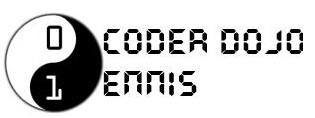

Ennis Tidy Towns 2020 Competition
These are the entries for the Ennis Tidy Towns competition. Ninjas were challenged to create an Ennis Tidy Towns-themed project, and in the midst of a viral lock-down many of them did!
|  |  |
Entries
Note these are best viewed with a computer (rather than a mobile) as many of the projects require use of a keyboard.
| Entry Number | Project Name and Link | Notes |
|---|---|---|
| 1 | Ennis Tidy Towns Comp. | To reach the end of the game you must get 15 points. Instructions: Move the mouse pointer Up and Down to get the 'Tidy Towns Cat' active. At the same time use the Spacebar to shoot litter into the bin. Try not to hit the walls otherwise you will lose points! When you reach the finish you have tidied Ennis. Good luck! :) |
| 2 | Rubbish Picking | Use arrow keys to move. Go to rubbish Bin to dump your rubbish if your bag is full. |
| 3 | Pong | Play against AI. Game not quite finished, imagine you are trying to get trash into a bin, and the evil AI player is trying to stop you! |
| 4 | Lets clean up!!!!!!! | Use your mouse and lead Monkey to things that need to be cleaned up. |
| 5 | Get to the Bin Obby | You will need to install Roblox in order to play this one (click on the Play button and it will guide you)! Lead your character over obstacles and get to the bin! |
| 6 | Bee Tidy | Help Polly collect pollen. What score will you get! |
| 7 | Clean up time!!! | Use the arrow keys to move the tidy towns person and just sit back and enjoy!!! |
| 8 | Don't be Mean, Keep the Planet Clean:) | The aim of this game is to pick up as much rubbish as possible before the game is over. Every time you click on a piece of litter you earn a point. However, if you step on dog poo, your score will be set back zero:( |
| 9 | Green Hero | Due to excess in litter and nuclear radiation, the rubbish of Ennis has mutated into monsters known as Litterbugs. You, the Green Hero, are our last hope. You must gain a score high enough by shooting Litterbugs to challenge the three Mother Litterbugs at the Ennis Cathederal, Market Square, and the Daniel O'Connell Statue. |